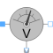

VoltageSensorVoltage sensor |

|
Information
This information is part of the Modelica Standard Library maintained by the Modelica Association.
This sensor can be used to measure the complex voltage.
See also
ReferenceSensor, FrequencySensor, PotentialSensor, CurrentSensor, PowerSensor, MultiSensor
Connectors (3)
| pin_p |
Type: PositivePin Description: Positive quasi-static single-phase pin |
|
|---|---|---|
| pin_n |
Type: NegativePin Description: Negative quasi-static single-phase pin |
|
| y |
Type: ComplexOutput |
Components (2)
| v |
Type: ComplexVoltage Description: Complex voltage |
|
|---|---|---|
| i |
Type: ComplexCurrent Description: Complex current |
Used in Examples (4)
|
Modelica.Electrical.QuasiStationary.SinglePhase.Examples
Series circuit with Bode analysis |
|
|
Modelica.Electrical.QuasiStationary.SinglePhase.Examples
Parallel resonance circuit |
|
|
Modelica.Electrical.QuasiStationary.SinglePhase.Examples
Example of transformer with short circuit impedance, transmission resistances and load |
|
|
Modelica.Electrical.QuasiStationary.MultiPhase.Examples
Unsymmetrical threephase load |
Used in Components (2)
|
Modelica.Electrical.QuasiStationary.MultiPhase.Sensors
Voltage sensor |
|
|
Modelica.Electrical.QuasiStationary.MultiPhase.Sensors
Continuous quasi voltage RMS sensor for multi phase system |